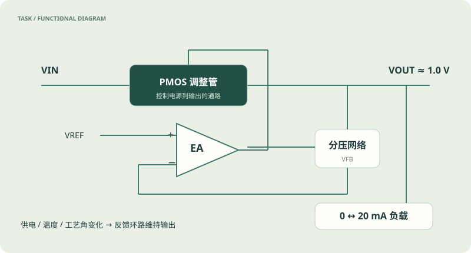

直流稳压
30 个 PVT 工况，0–20 mA；误差 ≤30 mV
设计误差放大器、调整管、反馈分压与内部补偿，在供电、温度和工艺变化中维持稳压。

30 个 PVT 工况，0–20 mA；误差 ≤30 mV
≤100 µA
1 kHz ≥30/35 dB；100 kHz ≥20 dB；1 MHz ≥10 dB
0.5 ↔20 mA；峰值偏移 ≤150 mV，恢复误差 ≤30 mV
峰值 ≤1.05 V；200–400 µs 误差 ≤20 mV
每模型独立上下文，一次正式轨迹。最后磁盘电路提交，正式分数不返回用于修订。累计输出上限 98,304 token。自选测试台上的局部成功，不等于完整验收通过。
连接图按提交网表逐器件重绘，包含全部器件、端口与尺寸；同名网络电气相连。它是便于检查连接的重绘图，不是 EDA 软件导出的原生原理图。切换历史版本只查看当时交付，正式分数始终对应最终冻结电路。
显示实际 terminal / read_image / finish 动作。长输出保留前 5,000 字符；完整原记录仍在本地证据包中。包含 API 服务拒绝及恢复等待的开发用时不用于速度排名。
展开后加载原始题面。
采用 Linux ngspice 46 / SKY130。设计容器不含参考解、正式验收源码或模型 API 凭据；只读冻结电路交给独立评分器。
空目录传输问题修复后统一补测六组，全部采用补测结果，首轮另存。API 并发拒绝从检查点恢复，原已用预算和时间继续累计，未增加设计额度。
沿用原始电气评分。被阻断项没有继续独立测量；无有效测量以缺测展示，不填成 0。LDO 旧资产分不并入本轮电气评分。
来源提交 972f7cd7c95381134387b250edf18f3bd23bdd25。这是一轮 SimulationLE 自主工具与三版设计预算改编；每模型仅一次，不能据此建立稳定能力排名。
页面更新于 2026.11.08；旧测评记录通过历史入口保留。